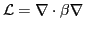

Diffusion operators
 with
discontinuous coefficients
are encountered in numerous applications, such as heat
conduction, neutron transport, and subsurface flow. These
discontinuities represent changes in material properties (thermal
conductivity, interaction cross sections, and permeability). Accurate
discretization of these operators is challenging when the
discontinuities in  are not aligned with the computational
mesh. Mesh alignment can be achieved by constraining mesh generation to
conform to the geometry of the different materials when using
unstructured or boundary-fitted Cartesian grids. However for complicated
geometries this may be intractable. An alternative approach is to use a
background Cartesian grid and to represent the geometry by intersecting
it against the grid. This gives rise to a set of irregular cut
cells where Cartesian grid cells intersect the geometry.
are not aligned with the computational
mesh. Mesh alignment can be achieved by constraining mesh generation to
conform to the geometry of the different materials when using
unstructured or boundary-fitted Cartesian grids. However for complicated
geometries this may be intractable. An alternative approach is to use a
background Cartesian grid and to represent the geometry by intersecting
it against the grid. This gives rise to a set of irregular cut
cells where Cartesian grid cells intersect the geometry.
While originally developed to handle irregular physical boundaries,
cut cells can also be used to resolve material interfaces that are
interior to the domain. This approach replaces the difficult global grid
generation problem with more tractable local intersection problems. When
combined with local mesh refinement, high resolution representation of
complex geometry can readily be obtained. While this essentially solves
the geometry problem, satisfactory discretization of diffusion operators
has remained elusive. Second-order finite difference schemes that account
for the location and orientation of the interface in a cut cell have been
developed, but these approaches are not conservative. Finite volume
schemes, such as the ghost fluid method developed in the context of
interface tracking using level sets, have also been developed. However
analysis of the convergence of these methods is complicated by the lack
of smoothness of the solution in the vicinity of the jumps in  .
.
Because local mesh refinement is necessary for accurate and efficient represention of complex geometry with cut cells, multilevel solvers are essential. We discuss issues related to discretization, grid convergence, and solver efficiency for diffusion operators on cut cell grids.